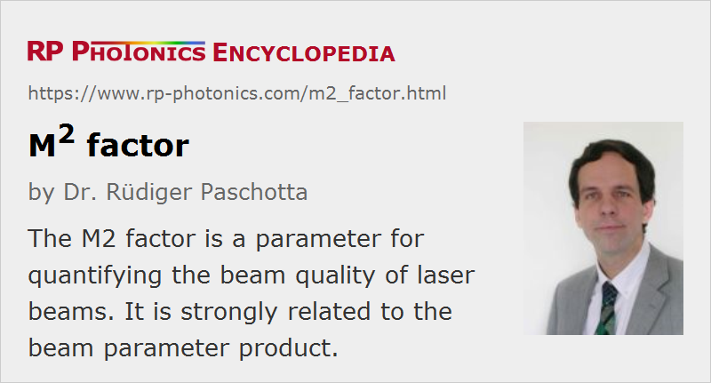

M2 Factor
Definition: a parameter for quantifying the beam quality of laser beams
Alternative term: beam quality factor
German: M2-Faktor
Categories: general optics, optical metrology
Formula symbol: M2
Units: (dimensionless)
How to cite the article; suggest additional literature
Author: Dr. Rüdiger Paschotta
The M2 factor, also called beam quality factor or beam propagation factor, is a common measure of the beam quality of a laser beam. According to ISO Standard 11146 [4], it is defined as the beam parameter product divided by λ / π, the latter being the beam parameter product for a diffraction-limited Gaussian beam with the same wavelength. In other words, the half-angle beam divergence is
where w0 is the beam radius at the beam waist and λ the wavelength. A laser beam is often said to be “M2 times diffraction-limited”.
A diffraction-limited beam has an M2 factor of 1, and is a Gaussian beam. Smaller values of M2 are physically not possible. A Hermite–Gaussian beam, related to a TEMnm resonator mode, has an M2 factor of (2n + 1) in the x direction, and (2m + 1) in the y direction [1].
The M2 factor of a laser beam limits the degree to which the beam can be focused for a given beam divergence angle, which is often limited by the numerical aperture of the focusing lens. Together with the optical power, the beam quality factor determines the brightness (more precisely, the radiance) of a laser beam.
For not circularly symmetric beams, the M2 factor can be different for two directions orthogonal to the beam axis and to each other. This is particularly the case for the output of diode bars, where the M2 factor is fairly low for the fast axis and much higher for the slow axis.
According to ISO Standard 11146 [4], the M2 factor can be calculated from the measured evolution of the beam radius along the propagation direction (i.e. from the so-called caustic). See the article on beam quality for more details. A number of rules have to be observed, e.g. concerning the exact definition of the beam radius and details of the fitting procedure. Alternative methods are based on wavefront sensors, e.g. Shack–Hartmann sensors, which require the characterization of the beam only in a single plane.
Note that the M2 factor, being a single number, cannot be considered as a complete characterization of beam quality. The actual quality of a beam for a certain application can depend on details which are not captured with such a single number.
The concept of the M2 factor not only allows one to quantify the beam quality with a single number, but also to predict the evolution of the beam radius with a technically very simple extension of the Gaussian beam analysis: one simply has to replace the wavelength with M2 times the wavelength in all equations. This is very convenient for, e.g., designing the pump optics of diode-pumped lasers. Note, however, that this method works only when the D4σ method for obtaining the beam radius is used, which is suitable also for non-Gaussian beam shapes; see again ISO Standard 11146 [4] for details.
Errors in M2 Measurements
Unfortunately, essential details of the ISO 11146 standard are often not observed in M2 measurements, with the result that wrong M2 values are obtained or even published. Some frequently made mistakes in measurements based on the beam caustic are explained in the following:
- The beam radius is measured with a simple criterion, not based on the full intensity profile, although the beam profiles are not all close to Gaussian. Only for nearly Gaussian beam shapes, such simple measurement methods are allowed. For others, the D4σ method based on the second moment of the intensity distribution must be used.
- The beam is focused too tightly, so that the beam waist is too small to measure its beam radius precisely. For example, a CCD camera has a limited spatial resolution; it cannot be used for precise measurements if the beam diameter corresponds only to a few pixels.
- Background subtraction, a sensitive issue for the second-moment method, is not correctly done. Camera images can exhibit some background intensity level, which may either really be belonging to the laser beam (and should not be removed then) or is an artifact which must be removed. If such a background results from ambient light, the most reliable measure is to switch this off, or to carefully shield it with a black tube in front of the camera. (Subtracting a fixed level for all images is problematic since ambient light levels may change, e.g. when somebody moves in the room.) The background issue is particularly serious when the beam size is only a fraction of the camera's sensitive area.
- The beam intensity on a camera is too high or too low. If it is too high, the center pixels may be saturated, so that the beam intensity at the center is underestimated and the measured beam radius is too large. For too low intensities, intensity background issues may become more severe.
- The beam radii are not measured sufficiently far from the focus. In order to properly judge the beam divergence, the ISO 11146 standard demands that about half of the measurement points must be more than two effective Rayleigh lengths away from the beam focus (whereas the other half of the points is close to the focus, i.e., within one Rayleigh length). This may be difficult in practice when the beam waist is made relatively large, leading to a long Rayleigh length and correspondingly large space requirements for a correct measurement.
When different instruments deliver different M2 values, this may easily be caused by such errors, rather than by the instruments themselves.
Questions and Comments from Users
Here you can submit questions and comments. As far as they get accepted by the author, they will appear above this paragraph together with the author’s answer. The author will decide on acceptance based on certain criteria. Essentially, the issue must be of sufficiently broad interest.
Please do not enter personal data here; we would otherwise delete it soon. (See also our privacy declaration.) If you wish to receive personal feedback or consultancy from the author, please contact him e.g. via e-mail.
By submitting the information, you give your consent to the potential publication of your inputs on our website according to our rules. (If you later retract your consent, we will delete those inputs.) As your inputs are first reviewed by the author, they may be published with some delay.
Bibliography
| [1] | A. E. Siegman, “New developments in laser resonators”, Proc. SPIE 1224, 2 (1990), doi:10.1117/12.18425 |
| [2] | A. E. Siegman, “Defining, measuring, and optimizing laser beam quality”, Proc. SPIE 1868, 2 (1993), doi:10.1117/12.150601 |
| [3] | X. Luo et al., “Power content M2-values smaller than one”, Appl. Phys. B 98 (1), 181 (2010), doi:10.1007/s00340-009-3623-8 |
| [4] | ISO Standard 11146, “Lasers and laser-related equipment – Test methods for laser beam widths, divergence angles and beam propagation ratios” (2005) |
See also: laser beam characterization, beam quality, beam parameter product, beam divergence, radiance, brightness, Gaussian beams, The Photonics Spotlight 2007-06-11
and other articles in the categories general optics, optical metrology
|  |
If you like this page, please share the link with your friends and colleagues, e.g. via social media:
These sharing buttons are implemented in a privacy-friendly way!